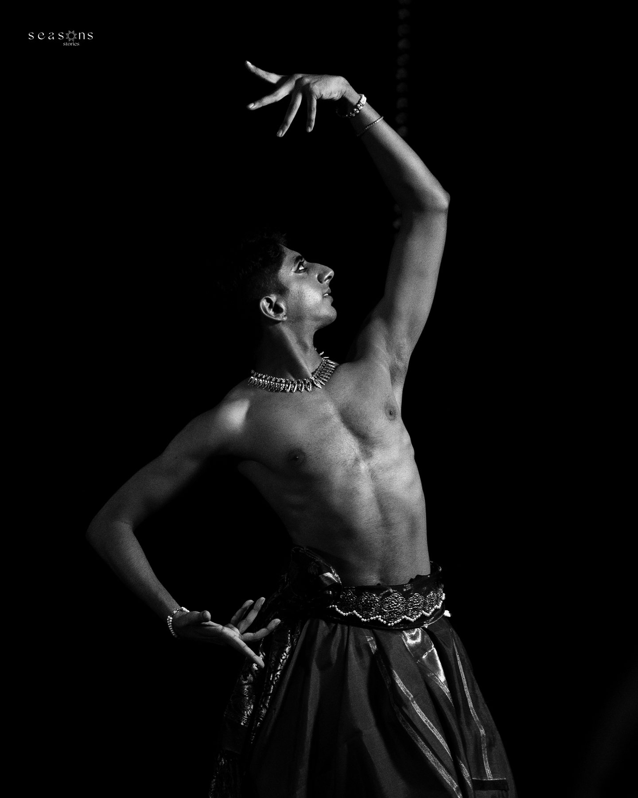
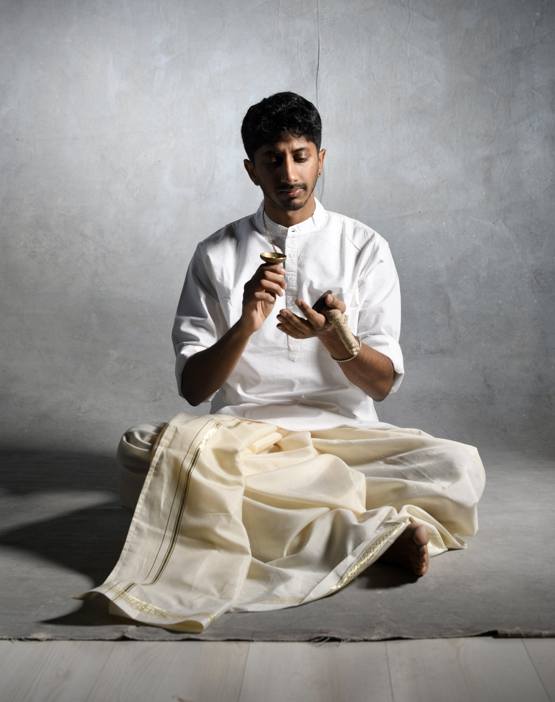
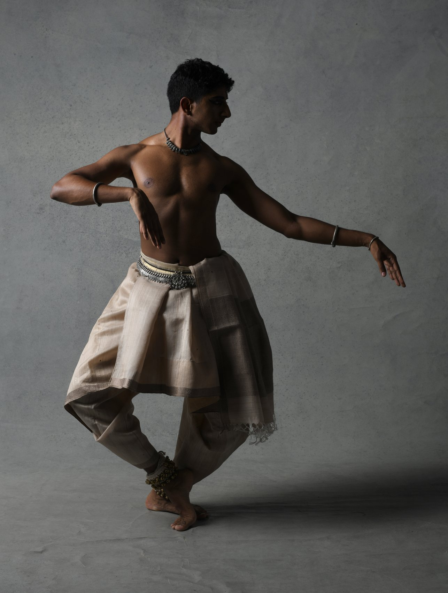
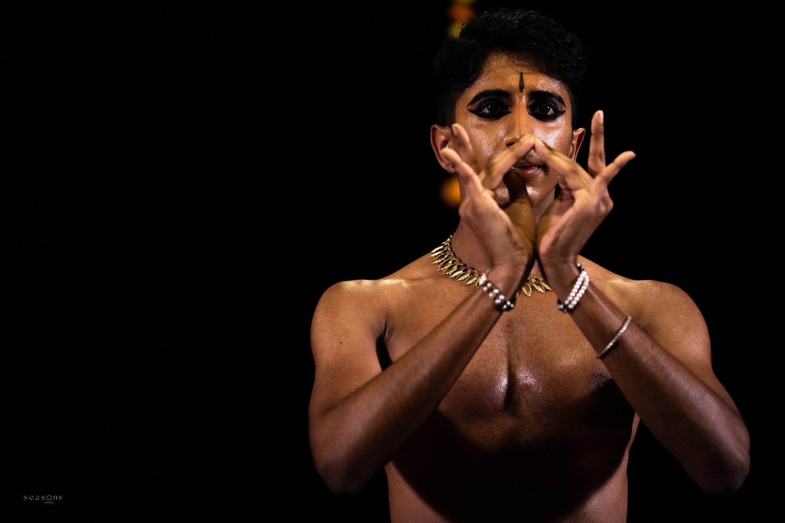
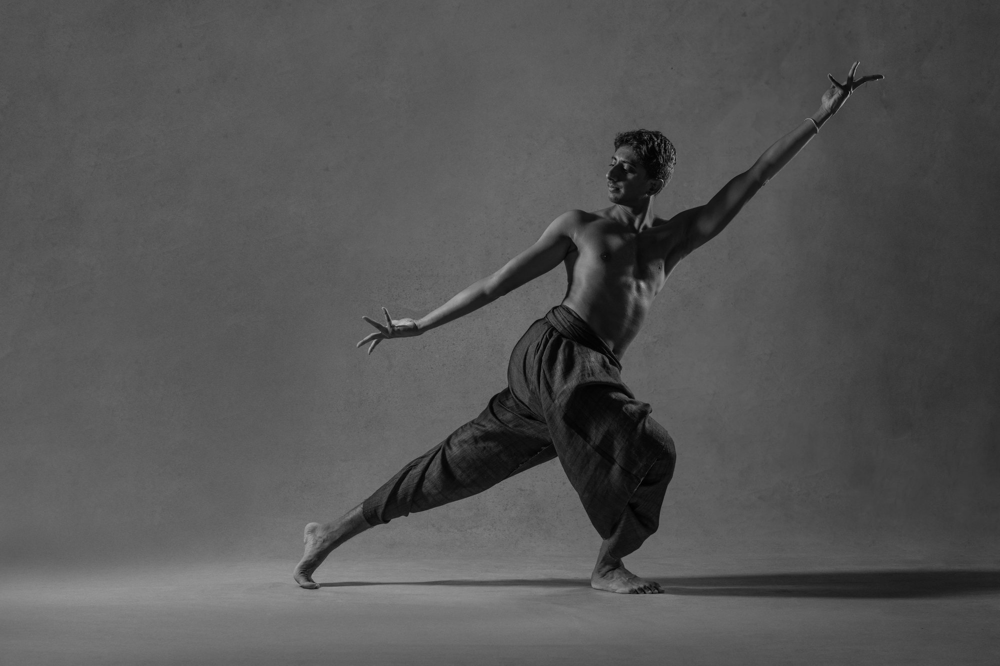
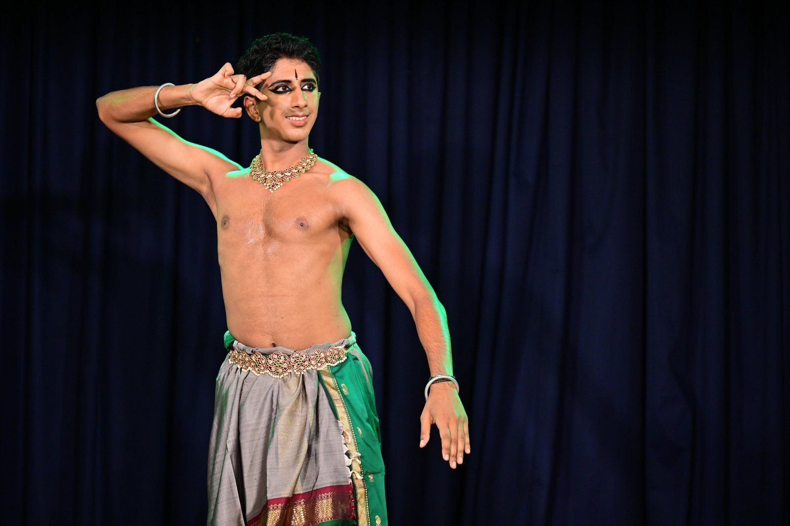
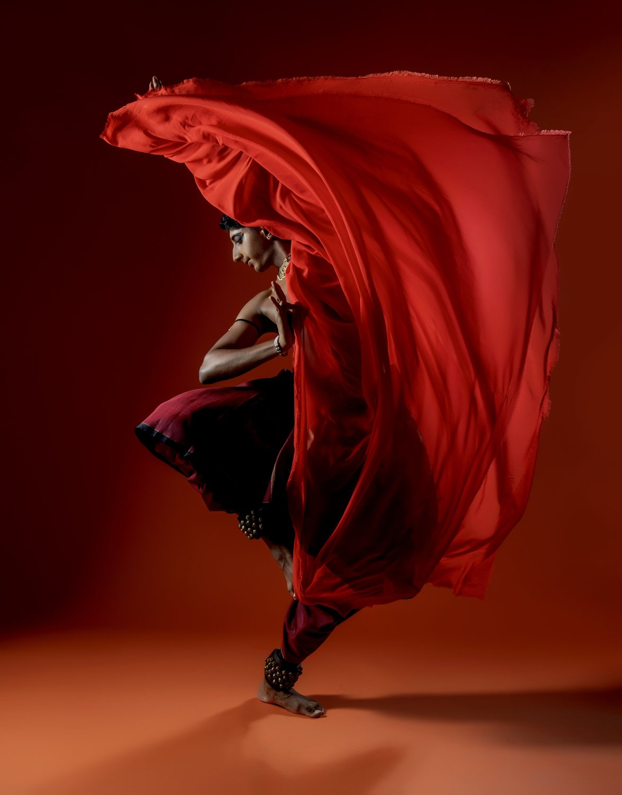
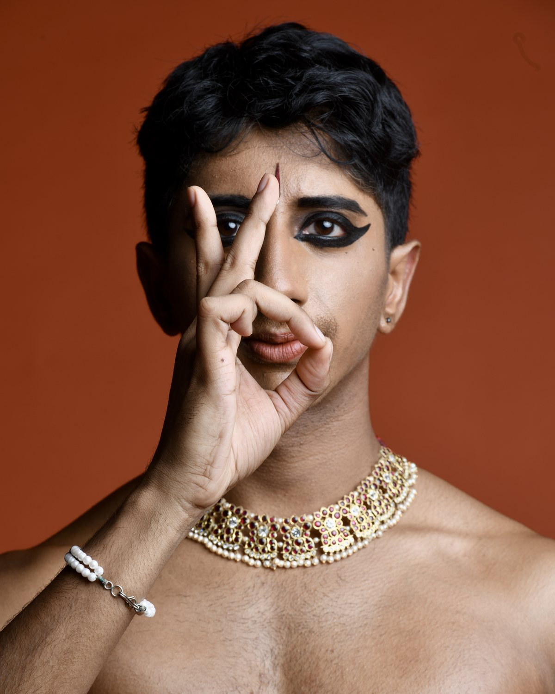

five
A thematic exploration of the five elements, tied to the senses and to life itself. five is a production open for touring opportunities — please get in touch if interested.
Solo
Bharatanatyam · Konnakol · Percussion
A dynamic artist bridging the dance form of Bharatanatyam with the percussive arts of konnakol and mridangam — storytelling, charisma, and technical precision.

About
Vivek Ramanan is a dynamic artist who brings together the Indian dance form of Bharatanatyam with the percussive arts of konnakol and mridangam. Over five years as a professional solo performer, he has distinguished himself through compelling storytelling, charismatic stage presence, and technical precision.
Trained under master practitioners, Vivek has performed extensively throughout the United States and India, presenting both classical repertoire and original thematic works. His grounding in Carnatic music and percussion creates a distinctive artistic voice — one where musical composition and improvisation integrate with the expressive movement, intricate footwork, and narrative power of Bharatanatyam.
As a full-time artist, he continues to perform, collaborate, and compose new work that bridges age-old themes in Indian thought with contemporary perspectives.
Original Works

A thematic exploration of the five elements, tied to the senses and to life itself. five is a production open for touring opportunities — please get in touch if interested.
Solo
An exploration of humans and nature, built on modern and ancient poetry.
Solo
A thematic exploration of family and the different pathways three siblings take through life. Conceptualized with Aarthy Sundar & Surya Ravi.
Trio
Classical Bharatanatyam alongside novel pieces built with traditional grammar.
SoloAwarded grants — Brown Arts Institute (2024) · Penn Treaty Special Services District (2024) · Rhode Island State Council on the Arts (2022) · The Arts Center of the Capital Region, Albany (2022)
Performances
Press
“Impeccable technique and footwork, warmth and charm, and a unique gift for storytelling and connecting with an audience.”
Adam Castaneda — Director, Pilot Dance Project, 2025
“The complicated and moving story of a family.”
Robert Johnson — The Dance Enthusiast, 2023
“A promising artiste and one to watch out for in the years to come.”
Poornima Ramaprasad — Narthaki, 2022
Media


More on YouTube · full-length recordings available on request — get in touch.
Booking & Commissions
For performances, festival programming, nattuvangam collaboration, or original compositions — reach out with a few details and Vivek will respond personally.